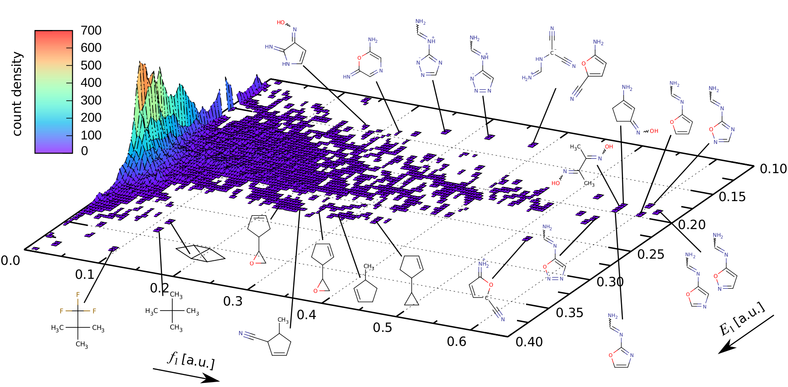

|

×

|
Electronic Spectra of 22 kilo QM8 Molecules
The dataset comprises structures of 21786 (22k) QM8 molecules relaxed at the B3LYP/6-31G(2df,p) level (from Scientific Data, 1 (2014) 140022), along with valence electronic excitation energies (in eV and nm) and
oscillator strengths (in au, length representation) computed at the RICC2/def2TZVP level.
Electronic spectra from TDDFT and machine learning in chemical space
R. Ramakrishnan, M. Hartmann, E. Tapavicza, O. A. von Lilienfeld
J. Chem. Phys. 143, 084111 (2015).
Quantum chemistry structures and properties of 134 kilo molecules
R. Ramakrishnan, P. O. Dral, M. Rupp, O. A. v. Lilienfeld
Scientific Data 1, 140022 (2014).
|